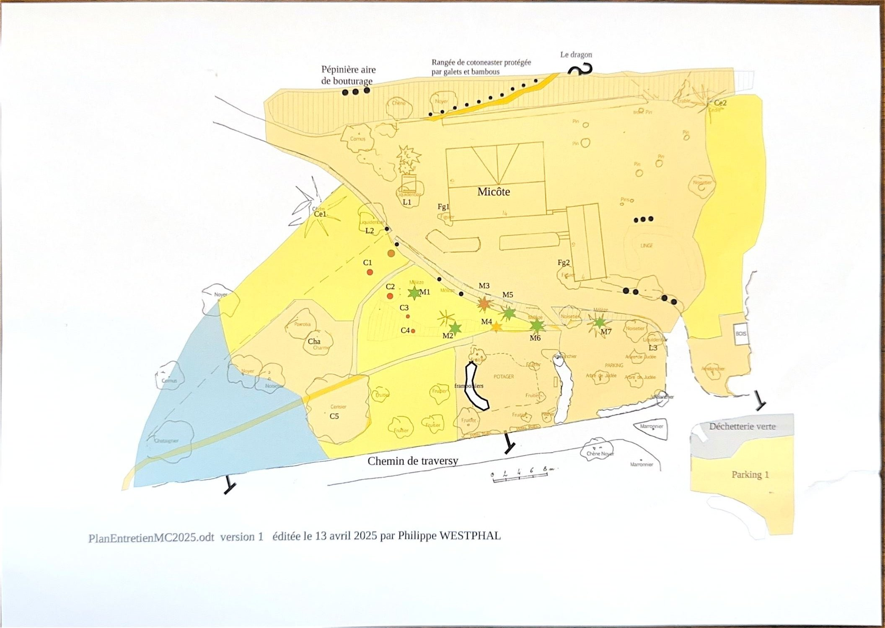
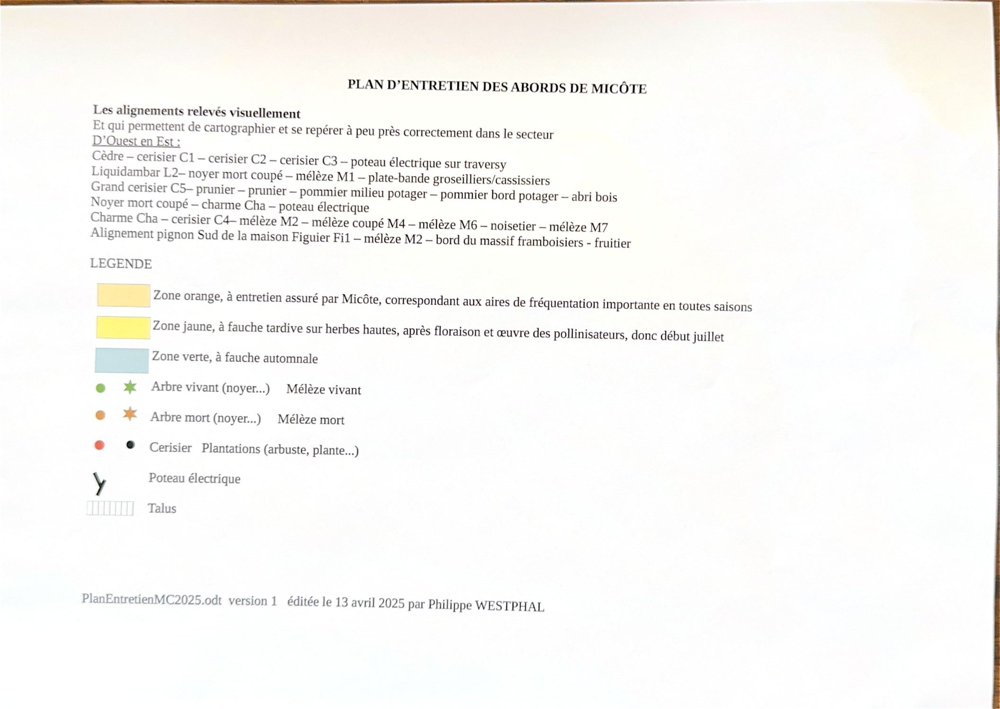

Le principe : on ne tond pas tout, et pas au même moment. Trois régimes de fauche cohabitent selon les zones, pour laisser les pollinisateurs faire leur œuvre.
Zones Quand faucher quoi
- Zone orange
- Entretien assuré en continu : ce sont les aires très fréquentées, en toutes saisons.
- Zone jaune
- Fauche tardive sur herbes hautes, après la floraison et l'œuvre des pollinisateurs — donc à partir de début juillet.
- Zone verte
- Fauche automnale uniquement.
Plan La carte du terrain
Les couleurs correspondent aux trois régimes de fauche. Les arbres sont repérés par des symboles : vert pour un arbre vivant, orange pour un arbre mort, et des points pour les plantations d'arbustes.

Repères Les alignements d'arbres
Relevés visuellement, d'ouest en est, ils permettent de se repérer dans le secteur :
- 🌲 Cèdre — cerisier C1 — cerisier C2 — cerisier C3 — poteau électrique sur traversy
- 🌳 Liquidambar L2 — noyer mort coupé — mélèze M1 — plate-bande groseilliers / cassissiers
- 🍒 Grand cerisier C5 — prunier — prunier — pommier milieu potager — pommier bord potager — abri bois
- 🪵 Noyer mort coupé — charme Cha — poteau électrique
- 🌿 Charme Cha — cerisier C4 — mélèze M2 — mélèze coupé M4 — mélèze M6 — noisetier — mélèze M7
- 🏠 Alignement du pignon sud de la maison : Figuier Fi1 — mélèze M2 — bord du massif framboisiers — fruitier
Aménagements À connaître sur le terrain
- 🌱 Une pépinière, aire de bouturage, au nord du terrain.
- 🎋 Une rangée de cotonéaster protégée par galets et bambous.
- 🥬 Le potager et le massif de framboisiers, au centre.
- 🍃 La déchetterie verte et le parking, au sud-est — voir sa notice.
📷 Voir le document original
